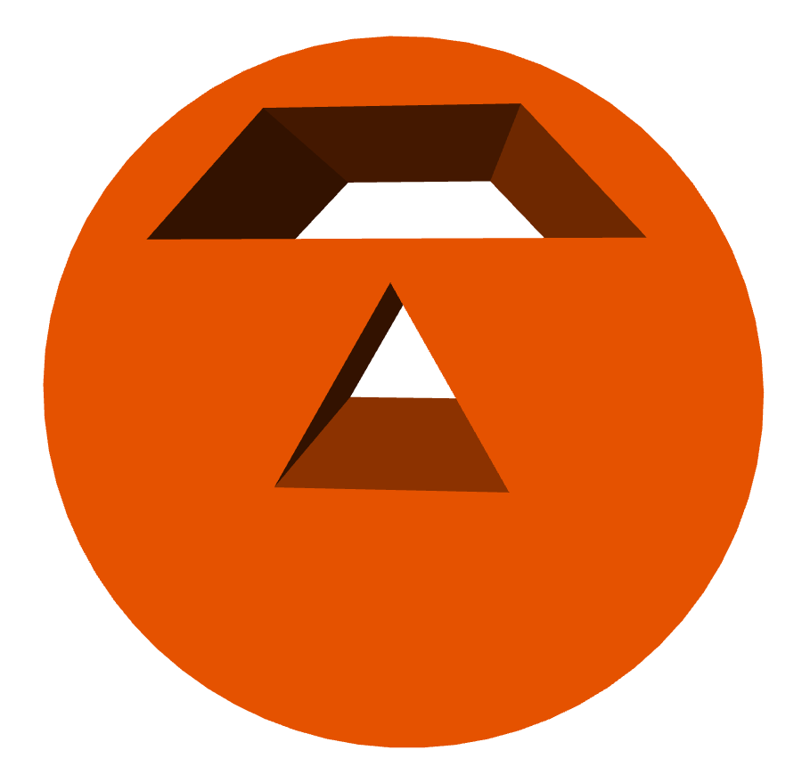

extrusion |

The extrusion object extrudes a 2D shape along a path. Here is an example, and here is the minimal syntax:
ex = extrusion(path=..., shape=...)
The path attribute is a list of points defining a path along which a 2D shape is extruded. The shape attribute is a list of x-y pairs describing the perimeter of a 2D surface, such as[ [2,0], [0,4], [-2,0], [2,0] ]. This 2D shape is extruded along the points specified by the pos list. (In GlowScript version 2.1 the details were somewhat different.)
The size of the extrusion: After creating an extrusion named "ex", ex.size represents the size of the bounding box of the extrusion. The x, y, and z components of ex.size can also be referred to as ex.length, ex.height, and ex.width.
The position of the extrusion is ex.pos: After creating an extrusion named "ex", ex.pos is located at the center of the bounding box. Later changes to ex.pos move the center of the extrusion to a new location. If you specify pos when creating the extrusion, the center of the extrusion will be moved to that location, just as if you changed ex.pos after creating the extrusion.
After creating an extrusion, changing the axis rotates the combined object. As with some other objects such as sphere or compound, changing the axis does not affect the size.
Other attributes
An extrusion is made out of quads and triangles which are then made into a compound object for speed of display. You can make additional copies of an extrusion by cloning it. You can move an extrusion by specifying a new pos, and you can change its size, axis, up, color, opacity, shininess, and emissive, as with other objects, but note that color is "multiplicative"; see compound.
Here are additional attributes that can be specified when creating an extrusion but cannot be changed later:
show_start_face and show_end_face By default, these attributes are True and the start and end faces are displayed. If you set one of these to False, that face is left open. These attributes have no effect if the path is closed.
start_face_color and end_face_color By default,the starting and ending faces are given the same color as the rest of the extrusion, as specified by color, but you can specify that other colors be used for the starting or ending face. These attributes have no effect if the path is closed.
smooth By default, adjacent normals for which the cosine of the angle between them is greater than 0.95 (corresponding to an angle of 18 degrees) are averaged so as to smooth the adjacent surfaces. You can set smooth to a looser criterion for more smoothing. For example, setting smooth=0.9 will smooth adjoining surfaces whose orientation differs by 53 degrees, a much looser criterion.
The three steps to making an extrusion
1) Create a 2D shape, either by giving a list of points or by choosing a shape from a supplied library of common shapes. Here are three examples. The first creates a triangle by listing 2D points. The second example creates a circular shape from the shapes and paths library, and the third creates a rectangular shape, using the shapes library.
tri = [ [2,0], [0,4], [-2,0], [2,0] ]
circ = shapes.circle(radius=3)
rect = shapes.rectangle(width=0.2, height=0.4)
A shape must be closed. That is, the last point must be the same as the first point.
2) Create a 2D or 3D path along which to extrude your shape, either by giving a list of points or by choosing a path from the shapes and paths library. Here are two examples (2D for simplicity). The first is a triangular path. The second chooses a circular path in the xz plane, and the third chooses a rectangular path in the xz plane. (Recall that "vec" is shorthand for "vector".)
tripath = [ vec(1,0,0), vec(0,0,-2),
vec(-1,0,0), vec(1,0,0) ]
circpath = paths.circle(radius=3)
rectpath = paths.rectangle(width=4, height=2)
A path need not be closed, in which case there will be end caps. For example, the following path is a portion of a circle:
arcpath = paths.arc(angle1=pi/4, angle2=pi)
3) Create an extrusion object to extrude your shape along your path. For example, using paths and shapes defined above, plus a color specification,
extrusion(path=circpath, shape=rect, color=color.red)
In this example a color (red) will be applied to the extrusion. You can include attributes such as pos, color, size, axis, up, opacity, shininess, and emissive when creating the extrusion, and these specifications will be applied to the compound object after it is created.
Path direction
The 2D paths in the shapes and paths library go counterclockwise in the xz plane, as seen from above. That is, if starting from a position on the x axis, they head in the -z direction and bend toward the left. If your shape has something sticking out on the right, it will be on the outer side of the extrusion, whereas something sticking out on the left will be on the inner side of the extrusion.
However, when specifying a path from the shapes and paths library, you can specify a pos and up, to tip the path out of the x-z plane. The path of the following extrusion will have a center at the location vec(1,2,0), oriented perpendicular to the vec(1,0,0):
extrusion(path=paths.circle(pos=vec(1,2,0),
shape=shapes.rectangle(width=0.4, height=0.2), up=vec(1,0,0), radius=2), color=color.cyan)
Color blending
As with a compound object, setting the color of an extrusion that was made with a color other than white makes a multiplicative blend of the overall color with the original color. For example, if the color of the extrusion was originally cyan, vector(0,1,1), and you later set the color to yellow, vector(1,1,0), the blend results in vector(0*1, 1*1, 0*0) or vector(0,1,0), which is green. If you plan to vary the color after creating the extrusion object, start with the color being white, vector(1,1,1), which is the default.
How the extrusion machinery works
At every point along the path this point plus the preceding and following points define a plane. A 2D plane is established perpendicular to the plane at this point. The 2D shape is drawn in this 2D plane. A shape should be positioned so that its center is approximately at the location of the path locations. If you offset the shape far from the path, you may get odd results, because there is enhanced danger of two adjacent drawing planes intersecting each other. Also, making sharp turns of wide extrusions may lead to one segment overlapping another.
If the bending angle from one point to the next is large, a mitered joint is produced. The bending angle is considered to be large if its cosine is greater than 0.95 (an angle of less than about 18 degrees).
Holes in the 2D shape
You can create a 2D shape with holes in it, in which case the extrusion has hollow sections. The statement below creates an extrusion of a circular disk that contains a triangular hole and a trapezoidal hole:

extrusion(path=[vec(0,0,0), vec(0,0,-5)],
color=color.orange,
shape=[ shapes.circle(radius=3),
shapes.triangle(length=2),
shapes.trapezoid(pos=[0,2], width=4,
height=1, top=2) ])
Here the shape is described by a list of shapes. The first shape in the list is always the outer contour, and the remaining shapes represent holes. Holes must not overlap each other, which gives an error.
It is even possible to have several (non-overlapping) outer contours, each with holes. Suppose "O" represents an outer contour and "I" represents an inner contour (a hole). The following shape has three pieces, two of them with holes:
s =[ [O, I, I], [O], [O, I] ]
As an example of this, the statement below creates an extrusion of a triangle and a rectangle, and the triangle contains two holes:

extrusion(path=paths.arc(radius=2,
angle1=-pi/3, angle2=pi+pi/3), color=color.cyan,
shape=[ [shapes.triangle(length=2), shapes.circle(pos=[0,.5], radius=0.2),
shapes.trapezoid(pos=[0,-0.2],
width=0.6, height=0.4)],
[shapes.rectangle(pos=[0,1.8],
width=1,height=0.3)] ])